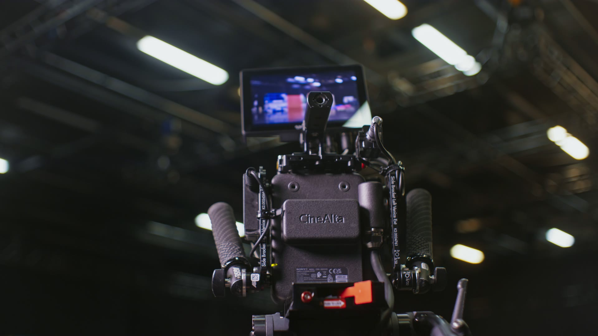

CAT · Crazy About Technology · סקיצות לעמוד הבית
שלושה כיוונים לאותו עמוד בית
אותו תוכן ואותו סדר בשלושתם, רק השפה העיצובית משתנה. כדאי לפתוח כל אחד גם במחשב וגם בנייד, לגלול עד הסוף ולבחור כיוון אחד שממשיכים איתו.

א. קולנועיכהה, דרך העינית
רקע כמעט שחור, צבע ציאן אחד כמו נורית הקלטה. הפתיחה נראית כמו מבט דרך מצלמה, עם קוד זמן רץ. מתאים אם רוצים להרגיש "הוליווד".
לפתוח את סקיצה א' ב. טכני
ב. טכניבהיר, כמו דף מפרט
נייר, דיו וכתום אחד. מספרים, יחידות ושרטוט של מנוף שמתארך בזמן הגלילה. מדבר לצלמים ולמפיקים שקוראים מפרטים.
לפתוח את סקיצה ב' ג. צבע
ג. צבעשדות צבע נועזים
כחול עז, שחור וירוק ליים. חלון וידאו שנפתח למסך מלא בגלילה, כמו תריס של מצלמה. הכיוון שהכי קשה לשכוח.
לפתוח את סקיצה ג'סקיצה בלבד: הטפסים לא שולחים, הקישורים לוואטסאפ, למייל וליוטיוב ממתינים לפרטים האמיתיים, ותמונת המנכ"ל, השם והציטוט הם מקום שמור. הסרטונים מסטוק, עד שיגיעו צילומים של CAT.